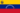

De: La Frikipedia, la enciclopedia extremadamente seria.
De: La Frikipedia, la enciclopedia extremadamente seria. De: La Frikipedia, la enciclopedia extremadamente seria.
| De la serie ciudades del mundo: | |||||
| Maracaibo | |||||
| |||||
| Topónimo oficial | La tierra del sol remardicia' | ||||
| País |  Venezuela | ||||
| Código postal | 6969 | ||||
| Superficie | Más grande que Caracas (pero con menos gente) | ||||
| Altitud | -1 bajo el mar (Lago de Matracaibo) | ||||
| Distancia | google maps | ||||
| Fundación | 1994 | ||||
| Población | 3.000.000 y dele (que nos multiplicamos como put..conejos) | ||||
| Gentilicio | discrepancia entre maracaibero, marabino, maracucho y marditos vulgares | ||||
| Alcalde | Daniel Penne (Manuel Robales fue llevado de vacaciones al Peru) | ||||
| | |||||
«Una Verga que no sirve pa' mierda como el mango!»
~ La vieja de los mangos después de que le tumbaran la cerca
«Mardita Lemna»
~ Un Marabino al ir al paseo del lago
Maracaibo es una ciudad ubicada en la parte calurosa y Manuel Rosales, está eventualmente otra persona con cara más ahuevulia'a que tú en la mañana después de un fiestón. Este grancarajo se llama "Pablo Perez".
Luego vas por la autopista "mesma" y, a través del recorrido, te parecerá curioso seguir viendo la cara de Manuel Rosales por toda la vía. Más adelante verás a otro imbécil conocido como "Michael Jackson Venezolano" debido a sus numerosas cuñas de televisión y vallas besando o abusando sexualmente de niños (guajiritos) abandonados. Estará vestido como San Nicolas. Al lado de él va a estar nada más y nada menos que Chacumbelé como morcilla envuelta en papel de panadería rojo, este personaje se llama GianCarlo TriMardito DiMartino. Pasando la circunvalación 1, verás algunos puticlubs y negros pidiendo plata, seguramente como eres tan poco güay te vas a quedar en el hotel "Golden Monky" (¡ojo!, ¡el nombre en realidad es así! GOLDEN MONKY), allí vas a ver a muchos gordos en toalla y recepcionistas homosexuales que a las 10PM se van a trabajar en "Las Laras" (epicentro de la prostitución lésbica y homosexual de Maracaibo). La primera noche te vas pa'l Bingo Aventura (porque otra vez no eres lo suficientemente güay como para irte al Seven Stars o al Golden Maracaibo), te gastas toda la plata que te llevaste y ya se pudrió tu viaje. Te echas un porro en Doctor Portillo. Te buceas a las putas "decentes" en Hooters. Te haces una "manualidad" y te vas a la mierda. Aún te parecerá curioso el hecho de que Manuel Rosales este en toda la ciudad... Ojo, los Marabinos/Maracuchos/Maracaiberos/Mar-ditos piensan con lógica, por eso Manuel está en toda la ciudad.
Los habitantes de Maracaibo son muy cultos y sociables, se constituyen en:
Suelen usar expresiones que sólo oirás allí y también decir cosas con poco sentido:
"PERO ES QUE ER' MARDITO PERRO NO SALE DE A PA' 'CÁ!", "SAQUEN ESA VERGA PA FUERA" "BICHAME LA BICHA QUE SE ME ESTÁ BICHANDO!"
Trabajan de lunes a sábado y el domingo se jalan todo en cerveza y whisky menor de edad (12 años de añejo, imbécil), para luego quejarse de que el gobierno es una puta mierda (que lo es) y terminar divorciandose y tirando con prostis y por ahí se fue otra vida (optimista, ¿no?).
El maracucho, malhablado marabino, es un individuo que habita en la ciudad de Maracaibo (obvio, ¿no?) en el Estado Zulia. Es una persona caracterizada por su conducción "temeraria" y su admirable capacidad de absorción de cerveza. Incluso es reconocido por combinar las dos anteriores.
El maracucho también es reconocido por su uso del léxico ofensivo como si fueran adjetivos normales, comunes y corrientes; sin olvidarnos que son reconocidos desde lejos, por su gran aficción a la cerveza, ya que pueden tener una grande, carnosa, peluda y desproporcional barriga de cervecero.
En Maracaibo vivía el guajirero loco, luego llego un tal alemán tataratataratatara abuelo del Niño loco Alemán, fundo su casa, la del compadre, una tasca, un deposito, y el BOD. Pero no fue sino hasta 1994 que la ciudad fué declarada ciudad. luego en 1999 sería degradada a "Población Anárquica" con la llegada del TriMardito sr. DiMartino al poder, eso sería hasta 2008.
Es la única ciudad en Venezuela que todavía hace uso orgullosamente del "Carrito PorPuesto", aunque desde el 2007 usado con otros fines (Cítese atraco, paseo millonario, Secuestro, Pa Caimarechico me voy "y no es pa bañame en la playa"). Los taxis te exprimen la cartera hasta el punto en que te ladra, pero ellos tienen su merecido (Cítese: atraco de Taxis, Robo de unidades de taxi, asesinato de taxista, sicariato, etc...), así que no te pongas enojado cuando te diga el taxista que son 300Bs.
Aquí una lista de expresiones y palabras que son comúnmente usadas en la ciudad con su significado. No recomendamos leer en caso de tener problemas cardíacos o estar embarazada(o) (podría afectar la capacidad de comprensión del niño).
Media:EL MARACUCHO SOLITARIO.ogg
-Tú: Estemm... eh, ¿cuál sera? Ehm, ¿llamo a mí puta novia para que venga a buscar el carro?
-Él: No lo creo...
En fín, terminas pagando unos 100Bs. en soborno (el cual tú no induces, él te lo hace inducir) y, bueno, ¡TE MATRAQUEARON!.
Artículo principal: Anexo:Usos de la palabra Verga en el Zulia
He aquí todos y cada uno de los significados de Verga en Maracaibo, primero en su forma normal y luego en forma maracucha. Recomendamos ver la versión narrada, más abajo en "Ver También"
En la versión narrada aparecen más significados pero no están aquí porque soy guay el articulo se extendería mucho. En todo caso pueden ver el anexo allá arriba.
En Maracaibo hay varios lugares de interés: tenemos como ejemplo La Basilica de la Chinita, lugar odiado por los pastafaris; la calle 72, donde están los puticlubs para los sifrinos; avenida 5 de julio, la unica verga buena aquí; el Paseo del Lago con su característico olor a lemna y guajiritos vendiendo cotufa y algodon de azucar.
Las playitas: TODO PARA PS1, PS2, PS3, WII, DREAMCAST, XBOX360 Y MÁS!!!; el callejón de los pobres, librería por excelencía para comprar los útiles escolares y uniformes; el polideportivo, el pachencho, DONDE BRASIL LE GANÓ A ARGENTINA EN LA FINAL DE LA COPA AMERICA; el Lía Bermudez, el museo más ga... digo, Guay del mundo; la Plaza Baralt; el hotel Aladdin para echar un polvo felíz; Los tres reyes magos: del cual dudo que los reyes magos salgan vivos de ahí, el barrio motocross, el barrio el úrtimo peo, integración Criminal, entre otros lugares interesantes que no os podéis perder al venir.
| | |
| Geografía
Personalidades
Furbo
Otros
|
Autor(es):